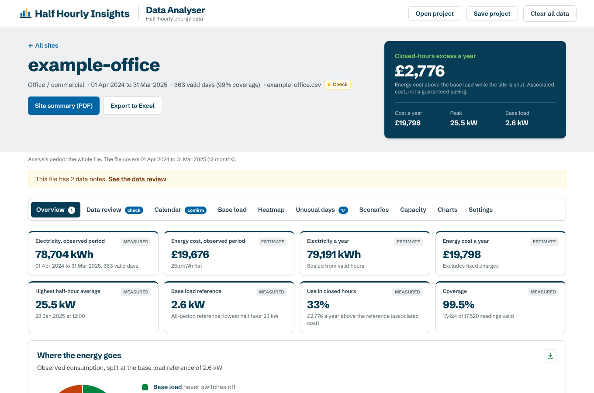

Free for UK businesses and public bodies. No sign-up.
Where is your electricity going?
Load your half-hourly meter data. In a minute you can see what runs when the building is shut, what never switches off, how close you get to your supply capacity, and what each pattern costs at your rates.
Start with your meter file
Excel or CSV, one file per meter. Day-per-row, day-per-column and timestamped layouts all work.
Open the analyserNo data to hand? Download an example file (a made-up office) and load that.
The patterns a bill can't show you
A bill tells you how much. Half-hourly data tells you when, and that is where most avoidable use hides.
Out-of-hours use
Energy used when the building should be shut, above what never switches off. Usually the cheapest saving: controls and schedules, not capital.
Base load
The demand that never goes away, overnight and at weekends. Every kilowatt of it runs all year, so small cuts add up.
Peaks and capacity
Your highest half hours against your agreed supply capacity, and how much new load (heat pumps, EV charging) the site could take.
Unusual days
Days that don't match their usual pattern, and lasting changes that show when something was left on, or a fix worked.
Bank holidays and weekends
Days the site should be quiet but isn't, checked against the opening hours you set.
Savings scenarios
What-ifs such as cutting out-of-hours use or lowering peak demand, without counting the same saving twice.
Your data never leaves your computer
The analyser is one web page that does all its work in your browser. Meter files are read on your machine and nothing is sent to us or anyone else.
No upload
There is no server doing the analysis. Once the page has loaded, you can switch off your connection and keep working.
No account
No sign-up, no email address, no tracking cookies.
You keep the outputs
PDFs, spreadsheets and project files save to your computer. Save a project to pick up where you left off.
Findings first, evidence underneath
Each site opens on its top three investigations, ranked by cost, with how confident the evidence is. Every figure says whether it was measured or estimated.
- Site and estate PDFs ready to send, plus Excel for your own analysis
- A year at a glance: every half hour in one heatmap
- Data checks for gaps, zero days, clock changes and duplicate rows before any figure is shown
- Customer dashboards: a locked, password-protected copy to send to a client

A site page from the example file. All data on this site is made up.
Three steps
No account, no installation. Works in Chrome or Edge on any recent computer.
Load your files
Drag in one file per meter. The analyser reads the layout, checks the data and tells you exactly what it found.
Set the hours
Tell it when each building is open. Out-of-hours findings depend on this, so it asks you to confirm.
Read and share
Work through the findings, then download PDFs, Excel or a customer dashboard.
Want a second pair of eyes on the results?
The analyser shows where to look. If you want help turning findings into savings, or a full energy audit across your estate, get in touch.